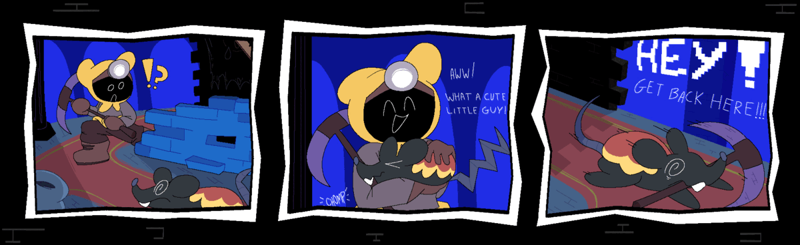
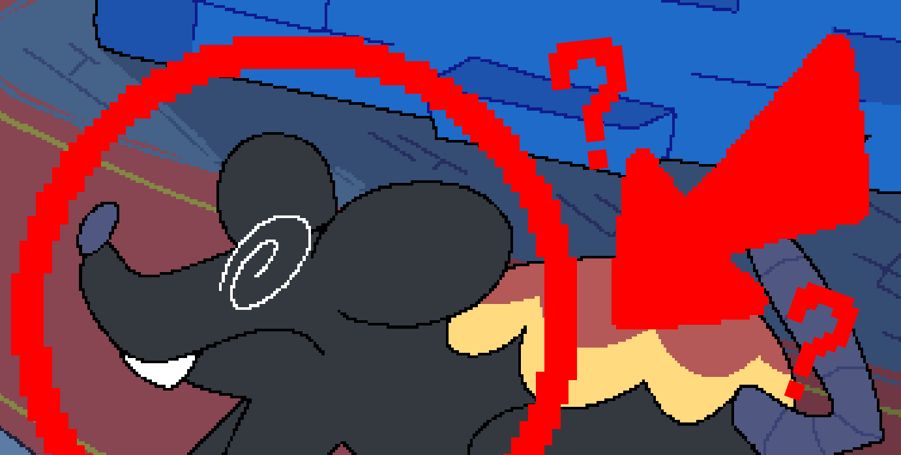
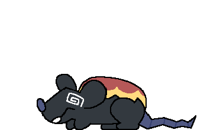
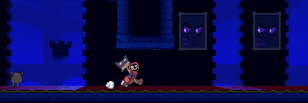
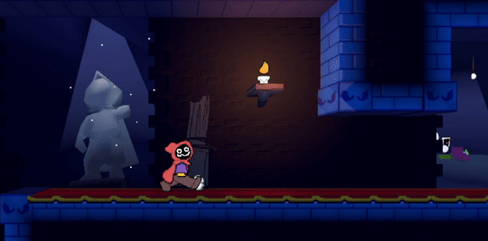

|
HEY VISITOR! This page only contains the latest post. For historical posts, click HERE! |
Something Old + Something Shrew!
Posted by blargg_ on January 28th 2024 
''TDHY Blog Comic #1 by: AXOL | Tunneler Finds a Friend :]''
I hope everyone had a Happy Holi-Dungeon! We have been taking a bit of a break on the game this past month but we are back at work in the Dungeon. We have some new things to show off this blog so without further ado...
Blog Comics!
As you saw at the beginning, we are starting to make short 3 panel comics for each blog from now on! The content in these comics will be related to what is shown off in the blog itself! This blog's comic is illustrated by AXOL, but expect future ones to also be illustrated by me and NIDO as well. Check out the new Comics page if you want to view any more TDHY comics by themselves! I really hope you enjoy these!

''You might have wondered who this little critter in the comics is...''
SCAMPS! Native to the Foyer, these lil rascals are awfully crafty, but timid. Their rug-like pattern on their back blends them into the rug below them. Be careful when approaching, Scamps may take a bite and run off!

Aside from their biting, Scamps (like Dwellers) have a knack for treasure, finding items, pickups and even weapons on the ground, and putting them up on their back. Such beauty! Such grace!
If you don't want these fiendish foyer fauna to make off with your hard-earned treasure, be ready to scoop up the treasure or be ready to fight back for it! Because in the Dungeon, it's finder's keeper's!

This footage and pictures may have got you thinking, “The Foyer looks a bit different since we last saw it” and yes, it is not you going crazy! We did some tweaking to the Foyer's design, and I have to say, it looks amazing!

''Some wonderful lighting, pots an- wait did that painting just move its eyes?''
Currently this is all I have to show for this month! We do have more things in the works right now so for now I leave you with a new song tease!
Here's to a new, productive year from me and the rest of the TDHY team! See you next month! 